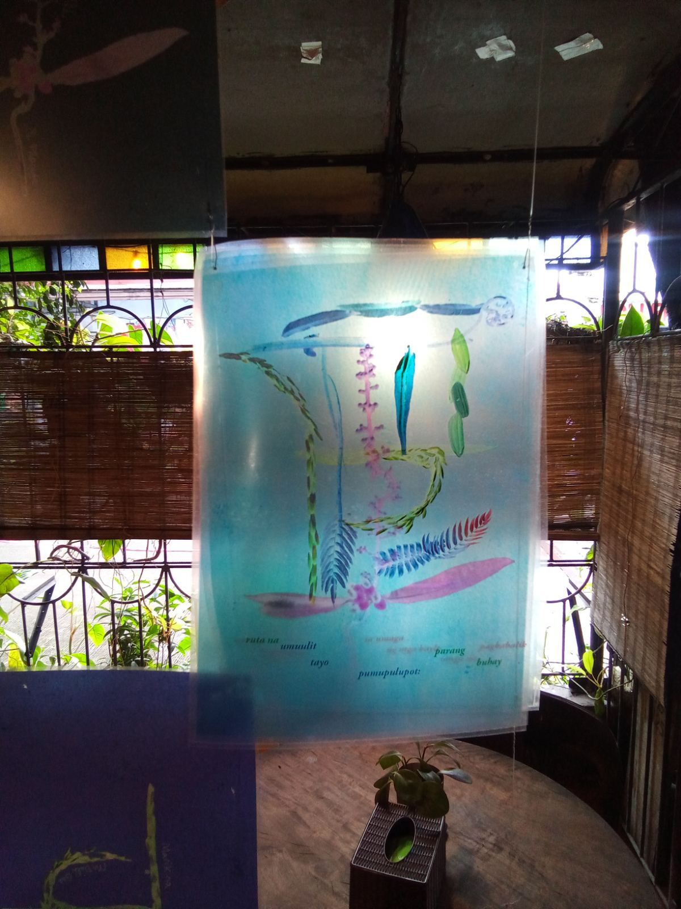
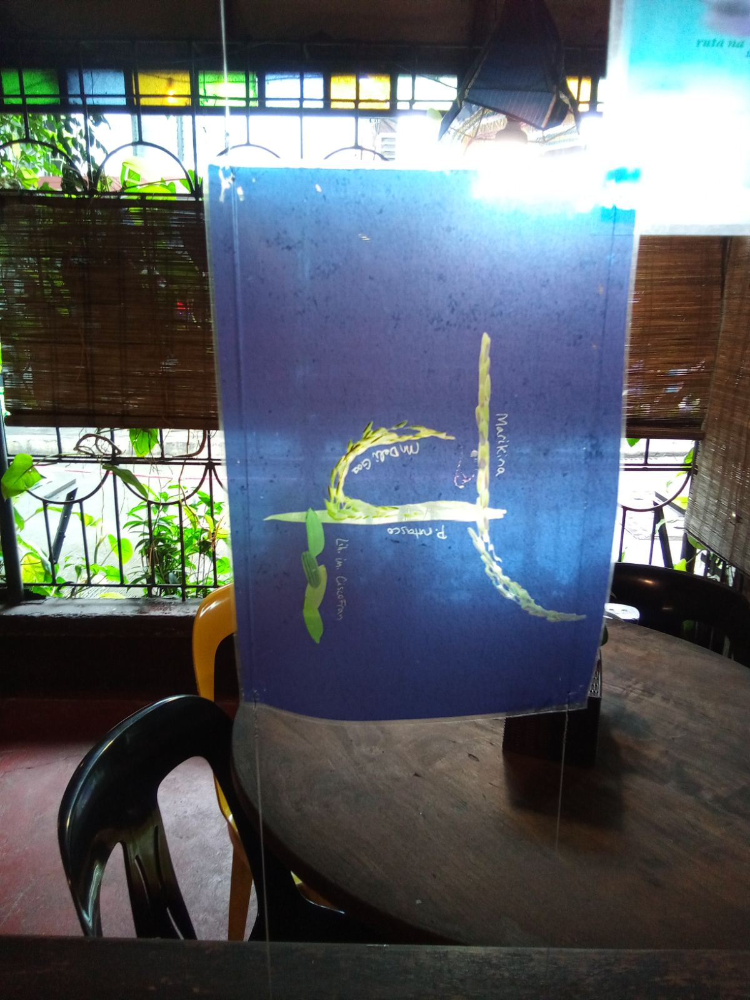
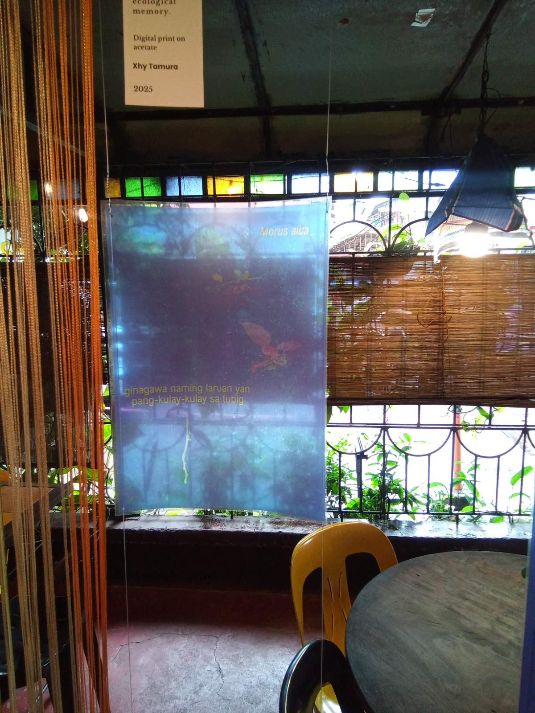

Tanim-Kalye
with input and collaboration from Krus na Ligas residents: Brisa Amir, Delle A. Castillo · Krus na Ligas Barangay Officials: former Barangay Captain Julian B. Santos, Barangay Secretary Jonathan C. Sombrero · UP Institute of Biology: Jayson A. Mansibang, The Jose Vera Santos Memorial Herbarium · Carinderia Sefali
Tanim-Kalye is a new media research-art and poetry installation that reimagines the street map of Krus na Ligas as a living plant assemblage. Roads are recreated using color-inverted images of flora significant to the community’s history and ecology. A work of community co-creation, this piece was developed through consultation with Krus na Ligas residents, its local governing unit, and botanists from the UP Institute of Biology.
The project began with the name Krus na Ligas itself, which references a cross-shaped Ligas tree that once grew in the area. The artwork transforms the roads of Krus na Ligas into ghostly, surreal forms that evoke botanical specimens and x-rays. Rendered in a cyanotype-like style and fragmented into glyphs, the maps are suspended on acetate over a window at Carinderia Sefali. This allows sunlight or the restaurant's lights to illuminate them like lightboxes. A bundle of them are stacked on each other, so the glyphs layer on each other to form the map of Krus na Ligas's roads, which can be flipped through. The blue backgrounds also reference the protective talismans of Mediterranean and Middle Eastern cultures, imbuing the maps with a magical, protective function.
This piece is part of the exhibit “Ang Paglaho ng Bagong Mundo sa mga Araw ng Nakaraan“ for the 2025 Quezon City Biennial, which explores the theme of Ilalim/Ibabaw (Under/Over) as a metaphor for the city's layered urban experience.
The Installation: Three Series
The work is presented in three distinct series, each printed on acetate sheets that invite interaction.
A Map with Poetry
This series consists of three superimposed layers that form a partial map of Krus na Ligas and a complete/fragmentable poem. Viewers can flip through the acetates, reading poetic fragments on each page, and three crucial plants:
- The Diliman Fern: A blue map with red accents, representing the area's native flora, an one of the possible namesakes of the Diliman area.
- The Ligas Tree: A pink/red map, nodding to both the tree's poisonous nature and Richard Mosse’s infrared photography of war, connecting it to the Katipuneros' history.
- Rice: A green map, referencing Krus na Ligas’ past as vital farmland.
Alternate Names
This series mirrors the main series with a dark background, making the flora appear to glow through light. Street names appear in altered spellings, wordplay, including Tadbalik (Tagalog syllabic reversal), turning color inversion into linguistic inversion. This can be seen as an alternate universe version of Krus na Ligas, with the wordplay referencing various aspects of Krus na Ligas's culture, present and past. The streets that the plants represent can be deduced from this series.
Lost Plants & Community Voices
This series maps the remaining streets using three overlooked or now missing plants in Krus na Ligas's history: the Mulberry (Morus alba), Pungapong (Amorphophallus paeoniifolius), and Pongamia (Pongamia merrillii). Each piece pairs a plant with a direct textual fragment from an interview conducted during the research process, enjambed poetically.
Media & Interviews
Listen to the voices and sounds that shaped this project. Interviews with Julian B. Santos have been included in their unedited form, at his request.
Audio with Former Barangay Captain Julian B. Santos
Part 1
Part 2
Part 3
Part 4
Part 5
Part 6
Videos with Former Barangay Captain Ramon Santos
Video 1
Video 2
Video 3
Video 4
Community & Research Conversations
Conversation with Resident and Barangay Secretary
Conversation with Ramon Bandong from The Jose Vera Santos Memorial Herbarium
Research as Art and Performance
The research process itself was an artistic act. By working directly with community members, officials, and academics, the project blurred the lines between artist, author, and participant. They were active collaborators who shaped the work with their expertise and lived experience.
The act of inquiry became a performance, creating social situations, such as residents exploring their own lineage, that would not have otherwise occurred. In this sense, the research generated its own intangible artwork, transforming knowledge-gathering into an act of ontological play and community connection.
About the Artist
Xyh Tamura is a transdisciplinary artist and researcher whose work collides music, writing, visuals, and theory. Exploring the intersections of science, technology, and culture from a Filipino-Japanese perspective, they hold a degree in Physics and are currently a Master's Student in Creative Writing from the University of the Philippines Diliman. Learn more about their work.